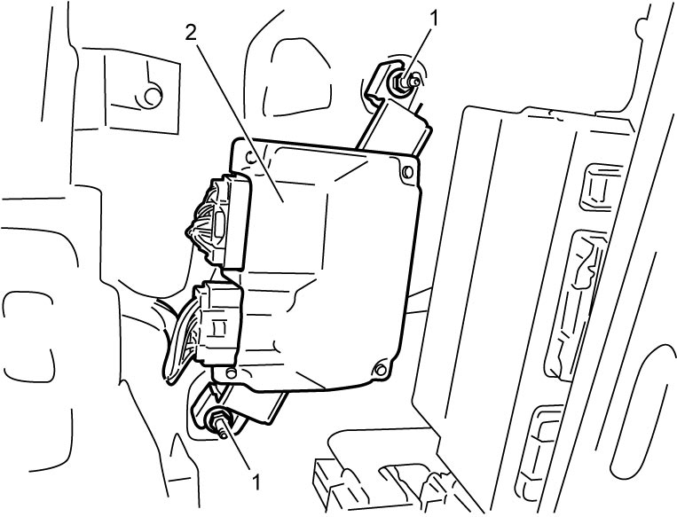

10I
| ENG A-STOP Control Module Removal and Installation |
Removal
NOTE:
Before removing the ENG A-STOP control module for replacement, record the “Starter Drive Counter” displayed on “Data List” of SUZUKI scan tool.
1)Perform the following procedure as preparation for replacing ENG A-STOP control module.
a)Check that ignition is “OFF”.
b)Connect SUZUKI scan tool to DLC.
c)Set ignition “ON”.
d)Select “Data List” mode on SUZUKI scan tool.
e)Record count of “Starter Drive Counter” displayed on “Data List”.
f)Set ignition “OFF”, and then disconnect SUZUKI scan tool from DLC.
2)For LHD, remove passenger side instrument panel undercover.
For RHD, remove driver side instrument panel undercover.
For RHD, remove driver side instrument panel undercover.
3)Disconnect connector from ENG A-STOP control module.
4)Remove nuts (1), and then remove ENG A-STOP control module (2).


 "Expand image")
Installation
Reverse removal procedure noting the following point.
•If ENG A-STOP control module is replaced, perform Procedure after ENG A-STOP Control Module Replacement.